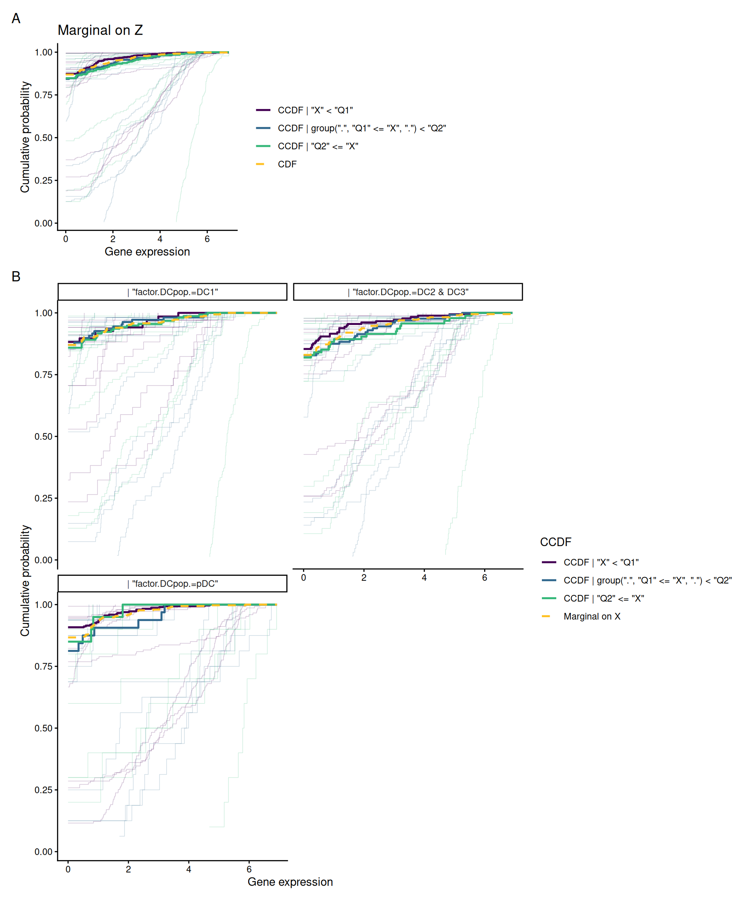

1 Overview of citcdf for gene set analysis
citcdf performs conditional independence testing through conditional cumulative distribution functions (Gauthier et al. 2021). In the case of gene set analysis it addresses the following null hypothesis for each gene g of the gene set of size s: H_0: Y_{g} \perp\!\!\!\perp X \mid Z, \:\forall g \in [s].
by testing whether F_{Y_{g} \mid X, Z}(y) = F_{Y_{g} \mid Z}(y), \: \forall g \in [s]. The associated test statistic is computed across a grid of thresholds \omega_1 < \dots < \omega_p spanning Y, where the indicator \mathbb{1}_{Y_ig \le \omega_j} is regressed on both X and Z at each threshold j. Under H_0, the coefficients \beta_jg carried by X are all null, and thus cit_gsa test statistic is the sum of squares whose asymptotic distribution is then a weighted mixture of \chi^2_1.
No distributional assumption is made on Y, and in that sense cit_gsa is distribution-free. It is therefore robust to zero-inflation, multi-modality and skewness that typical occur in single-cell RNA-seq data.
1.1 Function
-
cit_gsa():many outcomes at once, can test several gene sets, either asymptotic or permutation test
1.2 Inputs
Y is a numeric vector. X and Z are data frames, one column per variable, numeric or factor. geneset could be either a vector, a list, a gmt file or a BiocSet object.
2 Testing a gene set with cit_gsa()
2.1 The data
We use a part of the dataset from (Villani et al. 2017). Villani et al. (2017) isolated DCs from Peripheral Blood Mononuclear Cells (PBMCs) in healthy donor blood, and measured gene expression through single-cell RNA-seq. They documented DC sub-populations with their own specific transcriptional signatures. The dataset originally contain 26,594 genes and 1140 cells but we only keep here 458 genes and 539 cells. We normalized the data with log-transformed transcripts per million (log(TPM+1)) as in the original paper.
To perform gene set analysis we use a part of the gene sets database BTM of Stanford (Li et al. 2014). we have 48 gene set of sizes between 10 and 82.
2.2 Objectives
To identify which gene sets are significantly associated with the expression of the gene CD83, known to be a marker of DC activation. As CD83 expression varies across DC subset we will incorporate in our differential analysis an adjustment on the DC subpopulation.
2.3 Gene set test
M is the gene expression matrix, X is the CD83 expression, Z is the DC subpopulation and geneset are the BTM of Stanford gene sets.
NB: M must be oriented cells-by-genes, the transpose of usual genes-by-cells expression matrix.
M <- data.frame(t(data_Villani))
X <- data.frame(t(data_Villani[which(rownames(data_Villani) == "CD83"), ]))
Z <- data.frame(DCpop)
geneset <- BTM_geneset$genesetsWe perform two tests: a marginal test without conditioning on DC subpopulations, and a second test conditioning on the subpopulations.
Conditionning on DC subpopulation allow to reduce the number of significant gene sets.
res_adj is a list containing:
-
which_testandn_perm, the test performed and the number of permutations (NAfor the asymptotic test) -
pvals, the gene set raw and BH-adjusted p-values, plus the test statistics
2.4 Visualization
plot.cit_gsa() details one gene set. Panel A show the CCDF for each genes of the gene sets given CD83 expression with the marginal, i.e. only given DC subsets . The thick lines are the median value across the genes of the gene set. Panel B show the same comparison but within DC subpopulations.
NB : Z must be a numeric or factor type, not a character.
i <- which.min(res_adj$pval$adj_pval)
plot(
x = res_adj ,
M = M,
X = X,
Z = data.frame(factor(DCpop)),
geneset = geneset,
which_set = i
)
3 Practical considerations
4 Session information
─ Session info ───────────────────────────────────────────────────────────────
setting value
version R version 4.6.1 (2026-06-24)
os Ubuntu 24.04.5 LTS
system x86_64, linux-gnu
ui X11
language en-US
collate C.UTF-8
ctype C.UTF-8
tz UTC
date 2026-10-19
pandoc 3.8.3 @ /opt/hostedtoolcache/pandoc/3.8.3/x64/ (via rmarkdown)
quarto 1.10.19 @ /usr/local/bin/quarto
─ Packages ───────────────────────────────────────────────────────────────────
package * version date (UTC) lib source
citcdf * 1.2.1 2026-10-19 [1] local
cli 3.6.6 2026-04-09 [1] RSPM
DBI 1.3.0 2026-02-25 [1] RSPM
digest 0.6.39 2025-11-19 [1] RSPM
dplyr 1.2.1 2026-04-03 [1] RSPM
evaluate 1.0.5 2025-08-27 [1] RSPM
farver 2.1.2 2024-05-13 [1] RSPM
fastmap 1.2.0 2024-05-15 [1] RSPM
generics 0.1.4 2025-05-09 [1] RSPM
ggplot2 4.0.3 2026-04-22 [1] RSPM
glue 1.8.1 2026-04-17 [1] RSPM
gtable 0.3.6 2024-10-25 [1] RSPM
htmltools 0.5.9 2025-12-04 [1] RSPM
htmlwidgets 1.6.4 2023-12-06 [1] RSPM
jsonlite 2.0.0 2025-03-27 [1] RSPM
knitr 1.52 2026-09-06 [1] RSPM
labeling 0.4.3 2023-08-29 [1] RSPM
lattice 0.22-9 2026-02-09 [3] CRAN (R 4.6.1)
lifecycle 1.0.5 2026-01-08 [1] RSPM
magrittr 2.0.5 2026-04-04 [1] RSPM
Matrix 1.7-5 2026-03-21 [3] CRAN (R 4.6.1)
mitools 2.7 2026-08-31 [1] RSPM
otel 0.2.0 2025-08-29 [1] RSPM
patchwork 1.3.2 2025-08-25 [1] RSPM
pbapply 1.7-5 2026-09-01 [1] RSPM
pillar 1.11.1 2025-09-17 [1] RSPM
pkgconfig 2.0.3 2019-09-22 [1] RSPM
R6 2.6.1 2025-02-15 [1] RSPM
RColorBrewer 1.1-3 2022-04-03 [1] RSPM
Rcpp 1.1.2 2026-07-05 [1] RSPM
reactable 0.4.5 2025-12-01 [1] RSPM
rlang 1.3.0 2026-07-05 [1] RSPM
rmarkdown 2.32 2026-09-01 [1] RSPM
S7 0.2.2 2026-04-22 [1] RSPM
scales 1.4.0 2025-04-24 [1] RSPM
sessioninfo 1.2.4 2026-06-04 [1] RSPM
survey 4.5 2026-02-24 [1] RSPM
survival 3.8-6 2026-01-16 [3] CRAN (R 4.6.1)
tibble 3.3.1 2026-01-11 [1] RSPM
tidyselect 1.2.1 2024-03-11 [1] RSPM
vctrs 0.7.3 2026-04-11 [1] RSPM
viridisLite 0.4.3 2026-02-04 [1] RSPM
withr 3.0.3 2026-06-19 [1] RSPM
xfun 0.62 2026-10-16 [1] RSPM
yaml 2.3.12 2025-12-10 [1] RSPM
[1] /home/runner/work/_temp/Library
[2] /opt/R/4.6.1/lib/R/site-library
[3] /opt/R/4.6.1/lib/R/library
* ── Packages attached to the search path.
──────────────────────────────────────────────────────────────────────────────